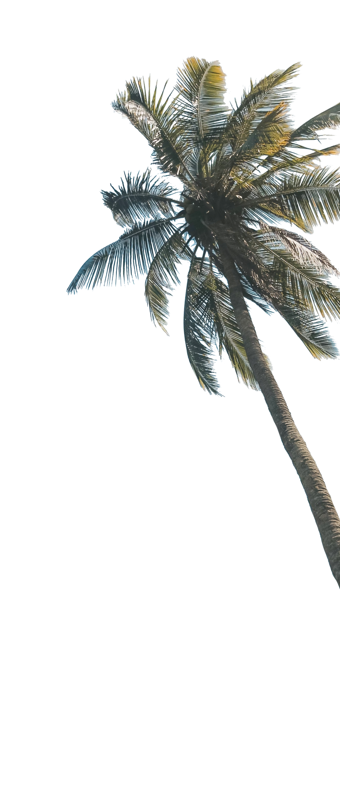
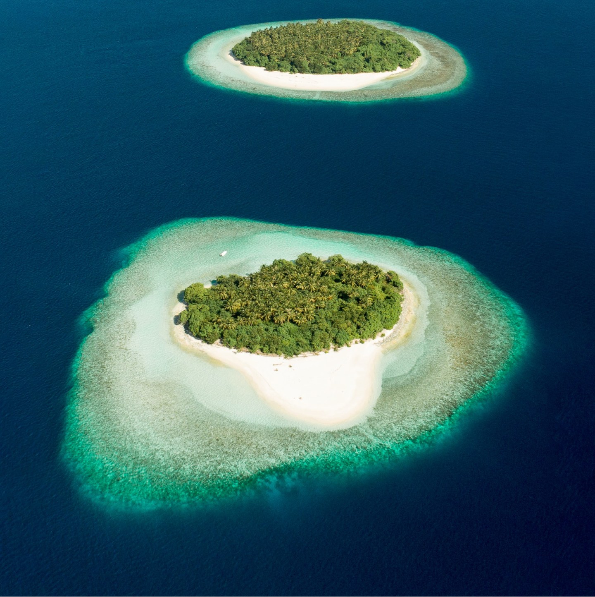
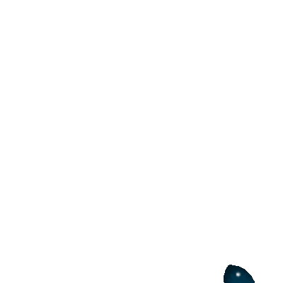

1%
of global
Garder la tête hors de l’eau
Les petits États insulaires en développement sont en première ligne de l'action climatique
Le discours du ministre des Affaires étrangères de Tuvalu, Simon Kofe, a marqué les esprits lors de la Conférence des Nations Unies sur le changement climatique (COP26) de 2021.
Et il l'a prononcé debout, les pieds dans l’eau de la mer jusqu’aux genoux, d'une manière symbolique (quoique très réaliste). Selon la NASA, le niveau de la mer a augmenté de 10 centimètres au cours des 29 dernières années.
Mais sortons de l'eau un instant.
Garder la tête hors de l’eau
Les petits États insulaires en développement sont en première ligne de l'action climatique

NOUS
SOMMES
NAUFRAGE
SOMMES
NAUFRAGE
Le discours du ministre des Affaires étrangères de Tuvalu, Simon Kofe, a marqué les esprits lors de la Conférence des Nations Unies sur le changement climatique (COP26) de 2021.
Et il l'a prononcé debout, les pieds dans l’eau de la mer jusqu’aux genoux, d'une manière symbolique (quoique très réaliste). Selon la NASA, le niveau de la mer a augmenté de 10 centimètres au cours des 29 dernières années.
Mais sortons de l'eau un instant.

De petits « grands défis »
Le cas de Tuvalu n'est pas unique : tous les petits États insulaires en développement (PEID) doivent composer avec des vulnérabilités environnementales, sociales et économiques similaires.
Souvent isolés géographiquement, ces pays de petite superficie ont tendance à dépendre considérablement des importations, notamment pour leur alimentation et pour leur énergie. Leurs principales activités économiques sont le plus souvent centrées sur le tourisme, ce qui laisse peu de marge de manœuvre pour s'adapter à des crises telles que la pandémie de COVID-19.
Si certains PEID sont considérés faire partie des pays les moins avancés (PMA), la plupart se classent parmi les pays à revenu intermédiaire. Lorsqu'une catastrophe climatique survient, les PIED sont frappés avec plus d’intensité que les pays continentaux – comme a récemment alerté le Groupe d'experts intergouvernemental sur l'évolution du climat (GIEC) – et leurs dispositifs de réponse sont parfois insuffisants en raison d’un accès réduit à des conditions de financement favorables dont peuvent bénéficier les PMA.
Le temps est un luxe que les petits États insulaires en développement ne peuvent se permettre.
Ils sont les premiers à subir de plein fouet les effets du changement climatique, même s'ils contribuent à moins d'un pour cent des émissions mondiales de carbone.
Ali Shafeeq, membre du conseil local de Dharavandhoo, aux Maldives, est pour le moins familier des effets du changement climatique : « La qualité des eaux souterraines est désormais si mauvaise que je défends à mes enfants de se brosser les dents avec. Nous utilisons de l'eau achetée en commerce ».
En 2017, lorsque l'ouragan Irma a déferlé sur Antigua-et-Barbuda, située dans ce qu'on appelle la « ceinture des ouragans », il a détruit 95 % des habitations et rendu un tiers du pays inhabitable. Avec des températures qui ne cessent d'augmenter, il faut s'attendre à ce que les ouragans deviennent plus fréquents et plus destructeurs dans les années à venir.
Arbi Rubon est né et a grandi à Ebon, dans la République des Îles Marshall. Il se remémore l’époque où lui et les siens se préparaient à la récolte du Lukweej (calophylle inophyle), lorsque l’arbre était en fleur. Aujourd’hui, en raison de l'irrégularité des pluies et de la hausse des températures de l'air, l'arbre aussi fleurit de façon imprévisible.
Le changement climatique nous affecte tous, mais pas de la même manière. Bien que les PEID soient les plus touchés, nous sommes tous dans le même bateau. Selon l'Organisation météorologique mondiale, les indicateurs majeurs du changement climatique ont battu des records en 2021.
SIDS are on the frontlines of the climate crisis. But they are also at the forefront of climate solutions.
De petites « grandes opportunités »
De petites « grandes opportunités »
Les PEID sont en effet les premiers touchés par la crise climatique. Pourtant, ils sont également les premiers à lutter pour survivre.
De nombreux PEID ont pris des engagements politiques forts afin d'atteindre la neutralité carbone et de bâtir un avenir résilient au changement climatique, y compris à travers des plans d'action climatique nationaux actualisés et ambitieux appelés « contributions déterminées au niveau national » (CDN). En effet, certains d'entre eux sont d’officiels pionniers dans leur domaine :
-
D'ici 2030, la Barbade adoptera des politiques destinées à faire du pays le premier État insulaire au monde 100 % vert et exempt de combustibles fossiles.
-
Antigua-et-Barbuda a pour objectif de former 100 % de la main-d'œuvre concernée à l'utilisation de nouvelles technologies d'atténuation pour une transition à faible émission de gaz à effet de serre d'ici 2030.
-
Le Suriname s'est engagé à atteindre 100 % d'énergies renouvelables d'ici 2030 et 100 % d'accès à l'énergie d'ici 2050.
Des promesses à l'action
Plusieurs PEID sont déjà passés à l'action. À Samoa, le PNUD travaille avec un partenaire du secteur privé, CRDC Global, afin de proposer des solutions de gestion intégrée et circulaire des déchets plastiques, en se concentrant sur la collecte, le recyclage et la réutilisation des déchets plastiques dans les matériaux de construction.
Cuba dispose d'une zone côtière particulièrement élargie, par conséquent une grande partie de sa population est vulnérable aux menaces liées au changement climatique. Les mangroves, qui couvrent 70 % de la côte, jouent un rôle essentiel en formant une barrière naturelle pour atténuer les effets du vent et des vagues en cas de tempêtes et de grandes marées.
« Il y a six ans, la mangrove ne dépassait pas un mètre de haut », raconte María Teresa. Aujourd'hui, un projet communautaire de restauration concrétise tout le potentiel de l'adaptation fondée sur les écosystèmes. 213 400 hectares de mangrove et de forêts ont été replantés depuis 2008. « Ici, vous pouvez respirer un monde sain », souligne María.
L'île de Ndzouani, aux Comores, était connue pour ses nappes d’eau de surface et son dynamisme agricole. Elle a aujourd'hui perdu plus de la moitié de ses rivières dû à la progression de la déforestation et du changement climatique. D'ici 2090, on estime que l'île connaîtra une réduction des précipitations allant jusqu'à 47 % pendant la saison sèche. La campagne « Un Comorien, un arbre » vise à planter 613 000 nouveaux arbres sur 571 hectares de terres à travers le pays, afin d’améliorer l'accès à l'eau et de protéger les écosystèmes vulnérables.
Retenez ceci :
97 % de l’eau sur Terre provient de l’océan
97 % de l’eau sur Terre provient de l’océan
L'océan a un potentiel immense : c'est l'un des plus grands réservoirs de carbone de la planète. Il en contient environ 50 fois plus que l'atmosphère, et représente 150 millions d'emplois dans l'économie mondiale.
Pourtant, l’océan a absorbé près de 30 % de toutes les émissions de CO2 produites par l'homme. En conséquence, il s’est réchauffé et le niveau de la mer s'est élevé.
Aussi, dès que l'eau devient trop chaude, les écosystèmes en subissent les conséquences, notamment les récifs coralliens, qui rejettent leurs fameuses microalgues colorées et virent au blanc. Plus de 90 % d'entre eux pourraient périr d'ici 2050.
L'océan est un rempart vital contre les effets du changement climatique. Sauver l’océan, c’est protéger notre avenir.
97%
of earth water is in the ocean
Retenez ceci :
97 % de l’eau sur Terre provient de l’océan
97 % de l’eau sur Terre provient de l’océan
L'océan a un potentiel immense : c'est l'un des plus grands réservoirs de carbone de la planète. Il en contient environ 50 fois plus que l'atmosphère, et représente 150 millions d'emplois dans l'économie mondiale.
Pourtant, l’océan a absorbé près de 30 % de toutes les émissions de CO2 produites par l'homme. En conséquence, il s’est réchauffé et le niveau de la mer s'est élevé.
Aussi, dès que l'eau devient trop chaude, les écosystèmes en subissent les conséquences, notamment les récifs coralliens, qui rejettent leurs fameuses microalgues colorées et virent au blanc. Plus de 90 % d'entre eux pourraient périr d'ici 2050.
L'océan est un rempart vital contre les effets du changement climatique. Sauver l’océan, c’est protéger notre avenir.
Quand le bleu passe au vert
Quand le bleu passe au vert
L'océan est aussi essentiel pour le développement durable au niveau mondial, et en particulier pour les PEID. Il fournit un large éventail d'avantages socio-économiques, par ailleurs il est étroitement lié aux cultures insulaires.
Les PEID capitalisent sur leur environnement pour diversifier leurs économies, renforcer leur résilience aux chocs et maintenir des millions de moyens de subsistance tout en préservant et en restaurant les écosystèmes marins et côtiers, en protégeant leur patrimoine culturel et en se prémunissant contre la perte de biodiversité.
Exploiter l'économie bleue peut aider les PEID à atteindre non seulement l'Objectif de développement durable (ODD) 14 sur la vie aquatique, mais aussi les ODD concernant la pauvreté, la faim, l'égalité des sexes, la croissance économique et le travail décent, le climat et d'autres.
Les Seychelles ont prouvé que le bleu pouvait se marier avec le vert. Et plus encore. Grâce à sa politique d’aires protégées qui couvrira 30 % du territoire océanique du pays (la taille de l'Allemagne), le pays montre que la conservation peut aller de pair avec le développement économique durable.
Dans l'océan Pacifique occidental et central, 14 PEID ont travaillé de concert pour créer la première pêcherie de thon 100 % durable au monde, générant quelque 500 millions de dollars de revenus par an et créant 10 000 nouveaux emplois.
La république de Maurice, à travers l'initiative Ecofish, améliore et renforce la durabilité économique, sociale et environnementale des pêcheurs artisanaux.
Sustainable development in SIDS is a complex endeavor, but if its potential is fully harnessed, challenges can be turned into big opportunities for the entire world.
Les petits poissons dans l’eau…
… nagent aussi bien que les gros

Se mobiliser pour les PEID
Le développement durable dans les PEID est une entreprise complexe, mais si son potentiel est pleinement exploité, les défis peuvent être transformés en grandes opportunités pour le monde entier. Comme l'a déclaré le ministre des Affaires étrangères de Tuvalu lors de la COP26, les PEID offrent aujourd'hui un aperçu de l'avenir de chacun d'entre nous.
« Nous coulons, » a-t-il déclaré. « Et les autres aussi. Et bien qu’on ressente cet impact dès aujourd’hui dans les Tuvalu, d’ici 100 ans, nous ressentirons tous les effets terribles de cette crise mondiale ».
Dans ce contexte, Rising Up for SIDS (« Se mobiliser pour les PIED »), l'offre intégrée du PNUD pour ces pays, vise à répondre à leurs besoins les plus pressants, en renforçant la résilience par l'action climatique, en stimulant l'économie bleue et en accélérant la transformation numérique.
Les PEID ont prouvé qu'ils étaient à l'avant-garde dans de nombreux domaines. Il est du devoir de tous de les aider à garder la tête hors de l'eau.